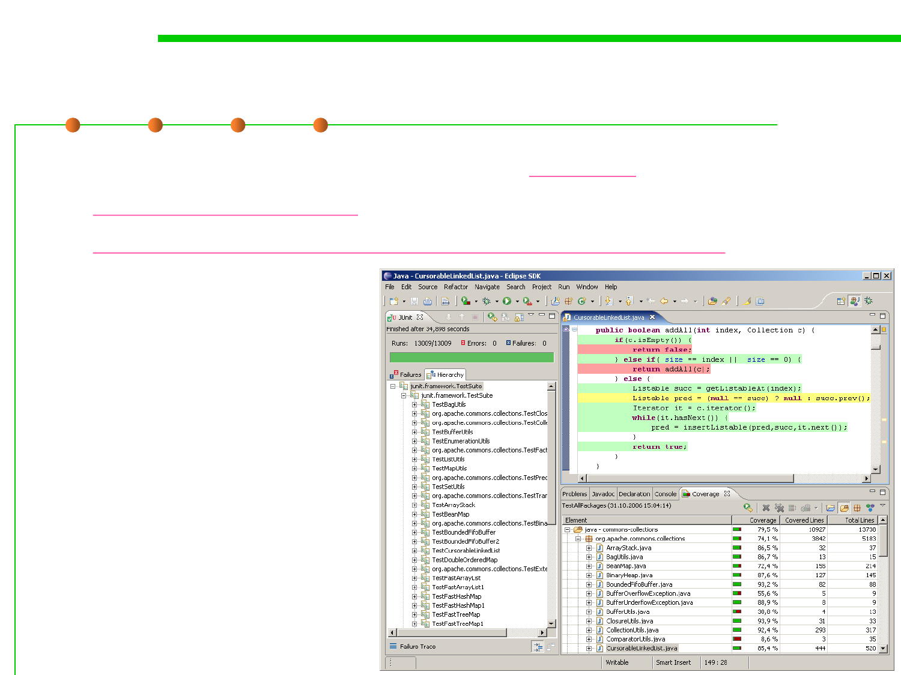

EclEmma
7.5 Testing and Test-First Programming
▪ A good code coverage tool for Eclipse is EclEmma
– http://www.eclemma.org
– http://www.ibm.com/developerworks/cn/java/j-lo-eclemma
▪ Lines that have been
executed by the test suite
are colored green, and lines
not yet covered are red.
▪ If you saw this result from
your coverage tool, your
next step would be to come
up with a test case that
causes the body of
the while loop to execute,
and add it to your test suite
so that the red lines become
green.